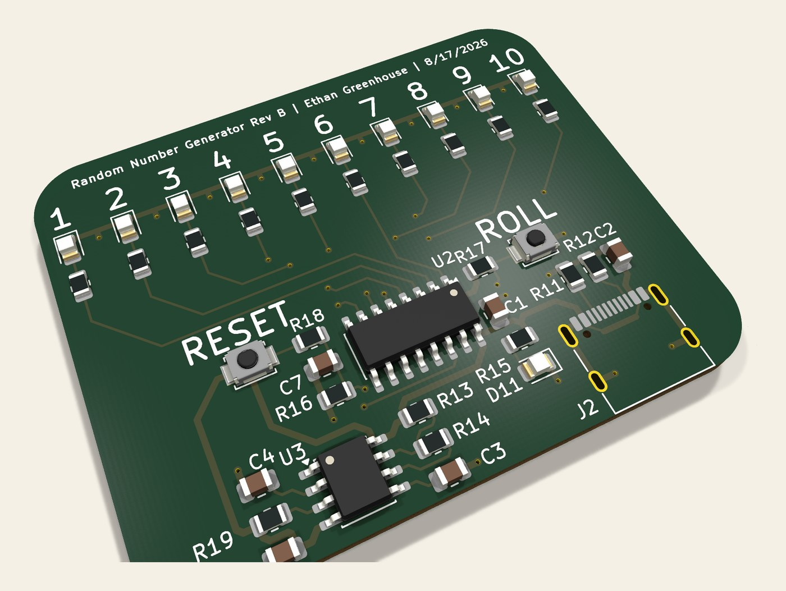
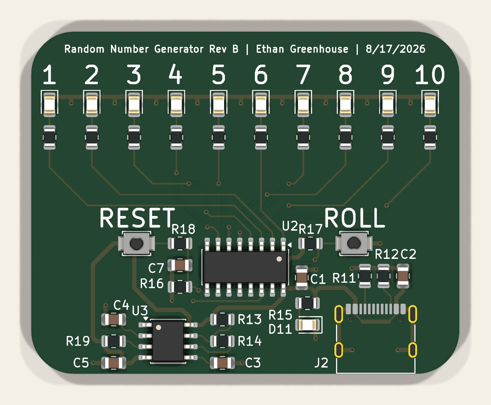

Random Number Generator PCB
August 2026 · Rev B · Boards in hand, assembly in progress

Overview
Press ROLL, ten LEDs blur, release, and exactly one of them stays lit. It's a digital die, and it does the job with two 1970s logic chips and no microcontroller at all.
I built this one to solder, not to solve a problem. Every other board in this portfolio is something I designed and sent to a fab; this is the first one I'm populating by hand, so it was deliberately specified around parts I could place with tweezers and an iron — 0805 passives, SOIC packages, nothing fine-pitch.
41 components, 50 × 40 mm, two layers, 43 vias, all surface-mount.
How It Works
An NE555 in astable mode free-runs as a clock. That clock drives a CD4017 decade counter, which is the whole trick of this circuit: the 4017 has ten outputs and asserts exactly one of them at a time, advancing on each clock edge. Ten outputs, ten LEDs, one lit — the decoding is free.
The ROLL button gates the 4017's clock enable against a 10 kΩ pull-up. Held down, the counter runs at the 555's frequency, far faster than the eye can follow, so all ten LEDs appear lit at once. Release it and the clock enable goes high, the counter freezes wherever it happened to be, and one LED stays on. A second button resets the counter to output zero.
The randomness comes from the gap between human reaction time and the oscillator frequency: the 555 cycles through all ten states orders of magnitude faster than anyone can time a button release. It's not cryptographic randomness — the counter is perfectly deterministic — but for picking a number from one to ten it's indistinguishable from it.
Design Notes
- 1 kΩ series resistors on all ten LEDs. With a 5 V rail and a red LED's ~2 V forward drop, that's around 3 mA each — dim enough to be easy on the eyes indoors and to keep total draw low even in the transient state where the counter is sweeping.
- 100 nF decoupling at both ICs. The 555 is notorious for injecting current spikes onto the supply rail when its output stage switches, and the 4017 sits on the same rail. Local decoupling at each package is what stops that from showing up as false clocking.
- Back-side ground pour to give every return path a short trip home rather than routing ground as individual traces.
- USB-C power input with 5.1 kΩ CC pulldowns, so a standard charger or laptop port will actually supply 5 V. Both CC pins get their own resistor.
- A separate power indicator LED, so the board tells you it's alive even when the counter is reset and no output is asserted.
The silkscreen carries numbers 1 through 10 above the LEDs and labels both buttons, which matters more than it sounds — a board where you have to consult the schematic to know which button does what is a board you designed for yourself and nobody else.

Schematic
Full schematic — open it full size to zoom in.
Build Progress
The Rev B boards arrived and I'm hand-soldering them now. This is the first board in this portfolio I'll have physically brought up myself, so the section below will fill in with photographs of the real thing rather than renders.
First things to check at bring-up: the 555's actual oscillation frequency against the calculated value, that the 4017 advances cleanly on every edge without double-clocking, and that the clock enable genuinely freezes the counter rather than letting it drift.